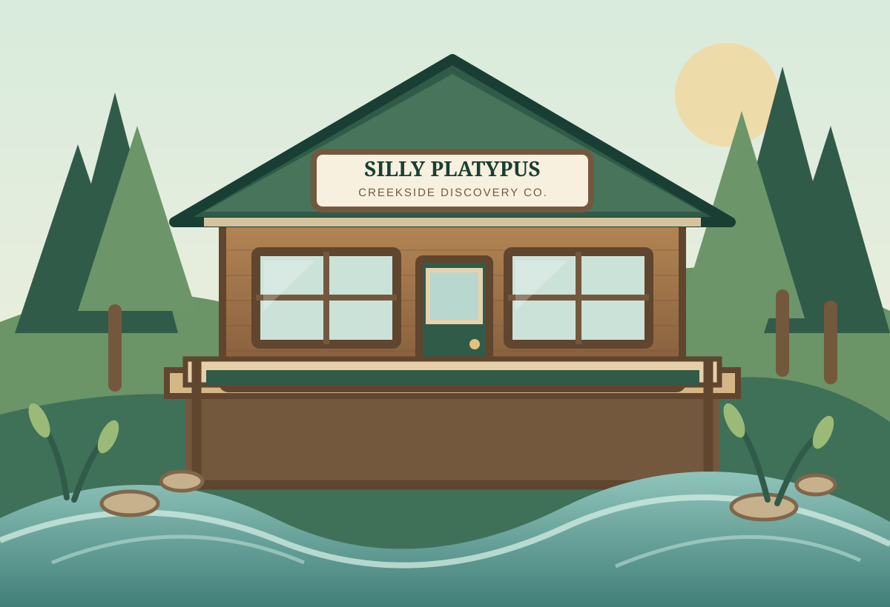

Find Silly Platypus
A cozy little shop imagined beside a winding creek.
Silly Platypus belongs beside Willow Creek
For this project, imagine our storefront beside the fictional Willow Creek Nature Walk in Charlotte, North Carolina. The setting gives visitors a place to browse exploration kits, pick up a field guide, and get ideas before heading outdoors.
The shop is designed as a welcoming stop for families, students, and anyone who enjoys learning about nature. In the story of the business, the best part of the visit is stepping outside and noticing what is happening along the water.
Willow Creek Nature Walk
Charlotte, North Carolina

Silly Platypus makes room for a quick visit
Visitors can stop by to browse the three product collections, ask questions about the activities, or find an idea for their next outdoor afternoon. The fictional shop is pictured as a small space with shelves for guides and a table for hands-on demonstrations.
Because this is an imaginary business, the location is part of the website's story and is not a real storefront. A real business page would include verified directions, accessibility details, parking information, and contact details.